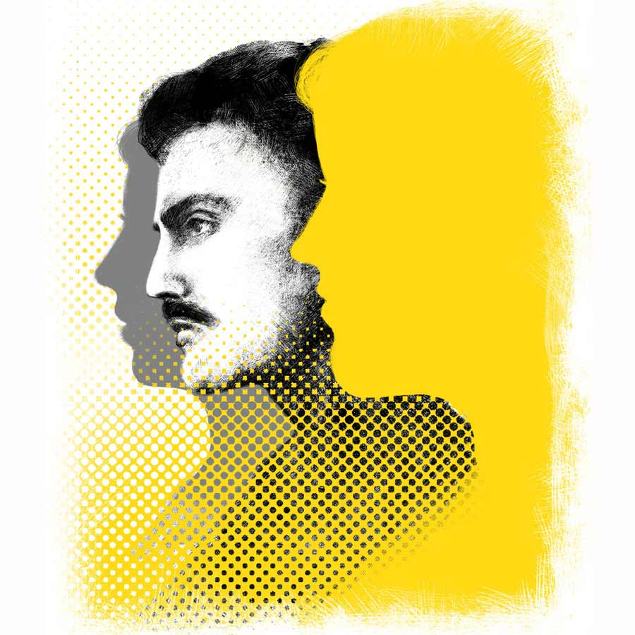

নদীর এপার কহে…
ধ্রুব মুখোপাধ্যায়
ইদানীং সপ্তাহে তিন দিন অফিস। লকডাউনের পর কর্মীদের অফিসমুখী করতেই এই বন্দোবস্ত। অরিঞ্জয় তিন দিনই অফিসে যায়। অফিস যেতে ভাল লাগে ওর। কর্মজীবনের যাবতীয় রাগ, অভিযোগ, অনুতাপ, আফসোস অফিসের কাচের দেওয়ালে বদ্ধ বাতাস গিলে নেয় অবলীলায়। বাড়ির বাতাসের মতো তেড়েফুঁড়ে আসে না। বলে না যে, তোমার বাপু বড্ড ঘ্যানঘ্যানানি। এই বাজারে চাকরি আছে, এই অনেক নয় কি! সকাল-সকাল উঠে স্নান-খাওয়ার ব্যস্ততা, চিংড়িঘাটা, টেকনোপলিসের যানজটে এসি বন্ধ হওয়ার ভয়ে স্থবির গাড়ির স্টার্ট বন্ধ করতে না পারার অনুতাপ, বাইপাসের বুক চিরে গজিয়ে ওঠা মেট্রোর থামের গায়ে গায়ে ‘টুডে’জ় পেন টুমরো’জ় গেন’ লিখে সাময়িক অসুবিধের জন্য ক্ষমাপ্রার্থনা, অফিসের পার্কিং লট ভর্তি হয়ে যাওয়ার অভিযোগ— সমস্ত কিছুতেই যেন জীবন আছে। যে জীবন কানের কাছে ফিসফিস করে বলে, ‘সংগ্রাম, অস্তিত্ব রক্ষার জন্য সংগ্রাম। অস্তিত্ব আছে বলেই না সংগ্রাম! না হলে কোথায় কী!’
অফিসে গেলে কাজও উতরে যায় ঝটপট। থেকে থেকে ‘এই যাঃ, নুন শেষ’ কিংবা ‘ঝট করে এক পাতা গরম মশলা এনে দাও তো, রান্নাটা নামাতে পারছি না’-র মতো দৈত্যদানবের উপদ্রব একেবারেই নেই। অফিস যেন রামনাম ওদের কাছে। মনঃসংযোগে তেমন ব্যাঘাত ঘটে না। অফিস যেতে তাই ভালই লাগে। পাঁচন-গেলা সংসার-সংগ্রাম থেকে দূরে, অফিস যেন এক টুকরো শান্তিনীড়।
কিন্তু ইদানীং কী যে হয়েছে, অফিসে ঢুকলেই ভিতরটা খচখচ করে। এক খণ্ড অতীত যেন পোশাক বদলে ছেলেমানুষ হওয়ার চেষ্টা করে। বহু পুরনো শুকনো ক্ষত থেকে বেরিয়ে আসতে চায় বদরক্ত। বলতে চায়, ‘আমরা আছি। আছি এখনও।’
লিফ্ট থেকে বেরিয়েই দরজা, সেটা পেরোলেই বিস্তীর্ণ প্যাসেজ। অতন্দ্র প্রহরীর মতো প্যাসেজের চার পাশে নজর রাখে ক্যামেরার খোলা চোখ। ফিসফিস করে বলে, ‘আমরা কিন্তু সব দেখছি।’
কিন্তু সব কি আর দেখা যায়! ইদানীং ওই চোখগুলোর দিকে তাকিয়ে তাই হাসে অরিঞ্জয়। বিদ্রুপের হাসি। সারবন্দি কাচের ঘরগুলো প্যাসেজের গায়ে গায়ে। সেই ঘরগুলোরই একটাতে বসে ও। ঢুকেই ডান পাশে ছোট্ট কাচের ঘর। সেটার গা বেয়ে কিছুটা এগোলেই অরিঞ্জয়ের বসার জায়গা। মেঝের গায়ে পুরু কার্পেটের আস্তরণ। শক্ত সোলের জুতোও শব্দ করতে হিমশিম খায়। তবুও কান ফাটানো একটা শব্দ কানে আসে ওর। কে যেন ডাকে। ডেকে বলে, ‘দ্যাখ, দ্যাখ!’
অরিঞ্জয় দেখেও। ছোট্ট কাচের ঘরের একেবারে মাঝখানে একটা মোটা গদির রিভলভিং চেয়ার। চেয়ারটাকে বসে বসে ঘোরায় অর্ণব। পরিপাটি করে আঁচড়ানো চুল, এক পাশে দিগন্তবিস্তৃত ঘাসজমির মাঝে সরু রাস্তার মতো সিঁথি, চওড়া গোঁফ আর পরিতৃপ্ত দু’টি চোখ। আগে গোঁফ রাখত না অর্ণব। চুলের সিঁথিও ছিল মধ্যিখানে। কিন্তু এখন একেবারে চেঞ্জড লুক। অদ্ভুত লাগে অরিঞ্জয়ের।
ওর আর অর্ণবের মাঝে একটা কাচের দেওয়াল। মাঝখানটা একটু ঘষা। চাইলেই দেখা যায়। সেই দেওয়ালটারই মতো নির্লজ্জ একটা অনুভূতি চুপচাপ দাঁড়িয়ে থাকে ওর সামনে। অরিঞ্জয় প্রশ্রয় দিয়ে চায় না। তবে না দিয়েও পারে না। কবে যেন অরিঞ্জয়ও গোঁফ রাখত। ইচ্ছে করেই রাখত। ভাল লাগত ওর।
‘পুরুষমানুষের গোঁফ না থাকলে চলে! কী সুন্দর একটা ম্যানলি লুক আসে। গম্ভীর লুক!’ কে যেন সুরে সুর মিলিয়েছিল ওর সঙ্গে। ভুলে গিয়েছিল অরিঞ্জয়। ভুলে গিয়েছিল গোঁফ রাখার শৌখিনতাটাও। কিন্তু অর্ণবকে দেখলেই মনে পড়ে যায়। রোজ হলদে শেডের জামা পরে আসে অর্ণব। মাস্টার্ড, গোল্ড, লেমন, বাটারস্কচ, বানানা, বাটার, কর্ন, ফ্ল্যাক্সেন, হানি— কত রকমের শেড। অরিঞ্জয় এই সব ক’টা শেড জানে। যদিও আগে জানত না। জেনেছিল বছর দশেক আগে। সে বারে এই নানা ধরনের শেড জানতে গিয়ে একেবারে নাকানিচোবানি খেতে হয়েছিল ওকে। একই রঙের জামা কেউ রোজ রোজ পরে! কিন্তু পরতেই হত। সেই জন্যই ওই কসরত। তৃপ্তিভাষার পক্ষে হলুদ রং নাকি অত্যন্ত শুভ। তাই শুধু ও নিজেই নয়, ওর প্রিয়জনদেরও হলুদ পরতে হবে। সে এক-একটা বায়না করত তৃপ্তিভাষা। আদায় করেই ছাড়ত। যদিও বেশ লাগত অরিঞ্জয়ের।
আজও কি ও রকমই বায়না করে তৃপ্তিভাষা? কে জানে?
মাঝেমধ্যে মনে হয়, পৃথিবীটা সম্পূর্ণ গোল। কমলালেবুর মতো কোথাও কোনও গর্ত-টর্ত নেই। মানুষ, ঘটনা, অতীত কারওই এক চিলতে জায়গা নেই কিছু লুকিয়ে রাখার। তা না হলে এত তাড়াতাড়ি আবারও সেই…
যাই হোক, ঝটপট পা চালিয়ে নিজের জায়গার দিকে এগিয়ে যায় অরিঞ্জয়। হয়তো লুকোতেই। কাজে মন দেয়। কিন্তু দিতে কি পারে? এই তো কিছু দিন হল অরিঞ্জয়দের কোম্পানিতে জয়েন করেছে অর্ণব। আগে বিদেশেই ছিল। অভিজ্ঞতায় বছর চারেকের সিনিয়র হলেও এই কোম্পানিতে অর্ণব নতুন। অর্ণব ম্যানেজার আর অরিঞ্জয় টিম লিড। কাজের জন্য মাঝেমধ্যেই ডাক পড়ে অরিঞ্জয়ের। সকালে অফিস ঢোকার পরপরই এক বার অরিঞ্জয়কে ডাকে অর্ণব। কাজের খবর নিতে। মুখোমুখি কাজের কথা বলতেই তো অফিসে আসা।
ইলশেগুঁড়ি বৃষ্টির মতো সিলিং থেকে ভেসে আসা আলতো আলো, কাচের ঘর, হলদে জামা আর পরিতৃপ্ত দু’টি চোখের সামনে ভীষণ অস্বস্তি হয়। নাকে ভেসে আসে বহুপরিচিত চেনা সুগন্ধির গন্ধ। কার যেন প্রিয় ছিল গন্ধটা। খুব ভাল গন্ধ। তবুও অস্বস্তি হয়। ঘড়ির কাঁটাগুলোকে কে যেন পিছনে টানে। কিন্তু পারে না। সময় কখনও কারও তোয়াক্কা করেছে? কথার ফাঁকেই দুপুর ঘনিয়ে আসে। বাইরের পৃথিবীতে কে যেন তরল সোনা ঢেলে দেয়।
দুপুরের বিস্তীর্ণ ক্যান্টিনে সারি সারি চেয়ার টেবিল। এক কোণে একটা মাইক্রোওয়েভ। তার সামনে খাবার গরম করার লাইন। বেশ লম্বা। অরিঞ্জয়ের মতো অর্ণবও খাবার আনে বাড়ি থেকে। তবে অরিঞ্জয় আর গরম করে না। আবারও যদি নাকে ভেসে আসে সেই চেনা গন্ধ, অথবা ছুঁয়ে ফেলে সেই হলদে শেডের জামা! এক আকাশ ক্যান্টিনটাকেও বড্ড ছোট মনে হয় ওর। আড়াল খোঁজে। কিন্তু অরিঞ্জয়ের পৃথিবীতে কোথাও কোনও গর্ত-টর্ত নেই। অর্ণব ঠিক খুঁজেখেটে চেয়ার টেনে বসে পড়ে একেবারে ওর পাশেই। কিংবা ডেকে নেয়, “এই যে এ দিকে। এখানে খালি আছে।”
অরিঞ্জয়ের টিফিনকৌটো থেকে একের পর এক বেরিয়ে আসে ভাত, ডাল, তরিতরকারি, মাছভাজা, আরও কত কিছু। সেই সঙ্গে অর্ণবের কৌটো থেকে ভাতের ফাঁকে উঁকি মারে এক মুঠো আলুসেদ্ধ। শুকনোলঙ্কা, জিরে, ফোড়ন দিয়ে মাখা আলুসেদ্ধ। অরিঞ্জয় জানে, ওই সেদ্ধতেই মেশানো আছে পেঁপে। তবে কিছু বলে না। অর্ণব রোজ বিরক্ত মুখে ফেলে রাখে মণ্ডটাকে। খাওয়া শেষে ফেলে দেয় ডাস্টবিনে। অরিঞ্জয় দেখে। ভাল লাগে ওর। চৈত্রের জ্বলতে থাকা পড়ন্ত দুপুরে এক খণ্ড কালো মেঘ যেন বৃষ্টির আশ্বাস দেয়। অরিঞ্জয়কে আগে চিনত না অর্ণব। তবে অরিঞ্জয় চিনত। দেখেছে ওকে। পুরনো প্রতিমা বিসর্জনের পর সিংহাসনে নতুন প্রতিমা বসালে গৃহস্থ যেমন মন দিয়ে দেখে, ঠিক সেই ভাবেই দেখেছে। দেখেছে, কোথাও কি কোনও রদবদল হল! হয়েছে হয়তো। বুঝতে পারে না। মনে হয় ও-পারটা যেন বেশ আছে।
দুনিয়ার সব কিছু বদলানো গেলেও অতীতকে বদলানো যায় না। বড্ড আফসোস হয়। অরিঞ্জয় মফস্সলের ছেলে। কলকাতায় এসেছিল নতুন চাকরি নিয়ে। দোতলা বাড়ির নীচের তলা ভাড়া নিয়েছিল ও। রং-মেলানো পর্দা, খাট, বইয়ের আলমারি, পড়ার টেবিল দিয়ে ভাড়াঘরটাকেই সাজিয়েছিল মনের মতো করে। তারই সঙ্গে জীবনটাও যেন সেজে উঠতে শুরু করে দিয়েছিল। তৃপ্তিভাষাও তখন অরিঞ্জয়েরই কোম্পানিতে। একই টিম। দুপুরের খাবার কিনেই খেত ও। সেই থালাতেই ধীরে ধীরে জায়গা পেত তৃপ্তিভাষার রেঁধে আনা নানা পদ। অফিস শুরুর চা-কফি আর শেষের ঝালমুড়ির মাঝেই গজিয়ে উঠত আবদারের পাহাড়। শহরতলির মাটিও তখন ওদেরই মতো আকাশের প্রেমে মত্ত। আকাশ ছুঁতে রাক্ষুসে মধ্যমার মতো বড় বড় হাইরাইজ় গজিয়ে উঠছে চার পাশে। সেখানেই অনেকটা উপরের দিকে থাকার আবদার ছিল তৃপ্তিভাষার। বারান্দা দিয়ে মেঘ না ঢুকলেও মেঘ যেন দেখা যায়। বৈকুণ্ঠ। ফ্ল্যাটের নামও ঠিক করে নিয়েছিল তৃপ্তিভাষা।
অরিঞ্জয়ের আপত্তি ছিল না। এমনকি আপত্তি ছিল না হলুদ শার্ট, পছন্দের সুগন্ধি, চওড়া গোঁফ কিংবা আলুসেদ্ধর মাঝে মিলেমিশে থাকা পেঁপেতেও। উল্টে ইচ্ছেগুলো যেন মিলে গিয়েছিল ওদের। মেড ফর ইচ আদার। চেষ্টাতেও খামতি রাখেনি অরিঞ্জয়। কোম্পানির হয়ে বিদেশ মানেই অল্প সময়ে এক গুচ্ছ টাকা। মেঘ-ছোঁয়া ঘর। সুযোগও পেয়েছিল। কিন্তু বেইমানি করেছিল নদী। এক পার গড়তে গিয়ে অন্য পারটাকে ভেঙে ফেলেছিল সে বারে। অন্য পারটা ভেসে গিয়েছিল সময়ের তোড়ে। আর খুঁজে পায়নি।
“আমার বয়স হচ্ছে। মা-বাবা ব্যস্ত হয়ে পড়ছে। নিম্নমধ্যবিত্ত পরিবার, বুঝতেই পারছিস...” বলে তৃপ্তিভাষা যখন বলছে, “বোনের বিয়ে ঠিক হয়ে গিয়েছে। আর এক বছর। ওর আগে আমারটা…” তখন যেন রাক্ষুসে মধ্যমার মাথায় এক গুচ্ছ প্রতিবাদী মেঘের আস্তরণ। আকাশ ছোঁয়া বারণ। তবুও লড়ে গিয়েছিল অরিঞ্জয়।
“একটু সময় দে। রেজিস্ট্রি করে নিচ্ছি না-হয়!” কিংবা “বেশ, কিছু দিন পর না-হয় বিদেশ যাব!” কথাগুলো বললেও সময় পাত্তা দেয়নি। সে দিন বৃষ্টি হয়েছিল খুব। মাথার উপর কালো তেরপলের মতো মেঘ। বুলেটের মতো বৃষ্টির ফোঁটা আছড়ে পড়ছিল মাটিতে। অরিঞ্জয় তখন ভাড়া করা ঘরের পড়ার টেবিল গোছাতে ব্যস্ত। তৃপ্তিভাষা ফোন করে বলেছিল, “পাখি বাসা বুনতে সর্বদা শক্ত গাছই খোঁজে। এটাই প্রকৃতির নিয়ম। জীবনেরও।”
“হ্যাঁ রে, আদৌ ভালবাসিস তো?” অরিঞ্জয় জিজ্ঞেস করলেও উত্তর পায়নি। আজও পায়নি। সময় সব সময় ক্ষতে প্রলেপই লাগায় না, কিছু ক্ষেত্রে বিষ মাখানো অস্ত্র নিয়ে খুঁচিয়ে খুঁচিয়ে ক্ষতও করে দেয়। সেই ক্ষতটা কি আজও শুকোয়নি? কোনও দিনও কি শুকোবে না?
অরিঞ্জয়ের ফ্ল্যাটটা আঠারো তলায়। বারান্দা দিয়ে খুব সুন্দর মেঘ দেখা যায়। নীচের মানুষ, আলো জ্বলা গাড়ি, রাস্তা, ফ্লাইওভার দেখলে মনে হয় বারান্দাটা সত্যিই বৈকুণ্ঠ। বিয়ের পরে চাকরি ছেড়ে অর্ণবের সঙ্গে বিদেশে চলে গিয়েছিল তৃপ্তিভাষা। অরিঞ্জয় জানত। তাই আর অপেক্ষা করেনি। বাড়ির পছন্দেই বিয়ে করেছিল। কষ্ট পুষে রাখেনি।
অফিস থেকে ফিরে বারান্দাতেই স্ত্রীর সঙ্গে বসে অরিঞ্জয়। রোজ বসে। চায়ের কাপ হাতে নিয়ে মেঘ দেখে। ইদানীং আর বসতে ইচ্ছে করে না। মনে হয় এই একই শহরের আর এক বারান্দায় হয়তো বসে বসে মেঘ দেখছে তৃপ্তিভাষা। সেই একই মেঘ। কিন্তু আরও কাছ থেকে। অর্ণবের ফ্ল্যাটটা হয়তো বিশ তলায়। কিংবা আরও উপরে। মেঘেরা হয়তো হাঁটু গেড়ে বসে থাকে ওদের বারান্দায়। শক্ত গাছ মাটি থেকে ঠিক কতটা উপরে উঠে মেঘ ছোঁয়? কে জানে!
রাতে বিছানায় শুয়ে শুয়ে বইয়ের পাতা ওল্টায় অরিঞ্জয়। ছেলেবেলার অভ্যাস। বইয়ের কালিতে ঘুমের ওষুধ থাকে। কখন যে দু’চোখে ঘুম নামে, বুঝতে পারে না ও। কিন্তু ইদানীং ঘুম আসে না। বইয়ের পাতা জুড়ে এখন শুধু একটাই বাক্য, ‘গৃহস্থের সিংহাসনের নতুন প্রতিমাটা তো বেশ! সব মেনে নিয়েছে। বেশ আছে তো!’
অভিযোগ করে অরিঞ্জয়ের স্ত্রী, “আলোটা কতক্ষণ জ্বলবে? ঘুমোতে পারছি না যে।”
‘আমিও তো ঘুমোতে পারছি না’— বলতে চাইলেও বলতে পারে না অরিঞ্জয়। চুপচাপ অপেক্ষা করে সকালের। অফিসের। তিন দিনের তিন দিনই অফিসে যায় অরিঞ্জয়। যদি কখনও বিরক্তি খুঁজে পায় অর্ণবের চোখে! যদি কোনও অভিযোগ… কালো মেঘের আড়ালে যদি একটুখানি রুপোলি রেখা...